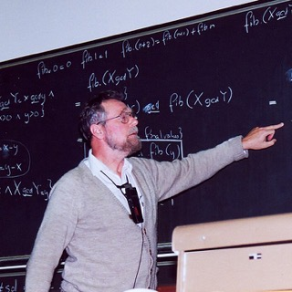

Citation & Responsible AI
Every idea in a report is either yours or somebody else’s, and your reader should never have to guess which. Citing is the habit that keeps the two apart: an in-text note plus a full reference, in APA, MLA, Chicago or IEEE style. This week you also meet the new question of the AI era — what to cite, what to disclose, and why a chatbot is never a source of facts — and you learn where plagiarism begins. Then build real references in the Citation Workshop.
Give credit, and make it checkable
13.1What is a citation? — a promise the reader can check
To cite a source is to give credit to the original source of a piece of information, an idea, or a particular way of putting an idea — in a standard format that anybody can follow back (textbook 6.1; slides 3–4). A working citation system always has two parts that point at each other:
- In-text citation — a tiny note right after the borrowed sentence: an author and year such as (Allen et al., 2011), or a number such as [3].
- Reference list (references / bibliography / works cited) — the full entries at the end: authors, title, journal or publisher, year, pages, and a DOI or URL.
How a citation looks depends on what you are producing (textbook 6.1.1):
| You are writing… | Credit it like this |
|---|---|
| an essay or report | in-text citation next to the borrowed text + full list of references at the end |
| a presentation | a source line on the slide under every borrowed chart, picture or key number |
| a program | a comment at the exact place naming where the code came from |
// Adapted from: <author or user name>, "<page or answer title>", // <URL>, accessed <date>. Licence: <as stated on the page>. // What I changed: renamed variables, added the bounds check. int gcd(int a, int b) { /* ... */ }
13.2Why bother? Three reasons
| Reason | What it means | Textbook / slide |
|---|---|---|
| Ethics — integrity | Without a citation you do not give credit to the people whose work you use. That is plagiarism, a serious offence in academic life. Citing is the clearest sign of honesty and self-respect in your work. | 6.2.1 · slide 8 |
| Scholarly discourse | Researchers cite so that colleagues can find the sources and so that each idea is credited. When you cite, you step into a global conversation and become a link in a chain of knowledge. | 6.2.2 · slide 8 |
| Documenting your work | Your reader (and your instructor) can see which ideas are yours and which build on others. A good list shows the effort you invested and strengthens your argument. | 6.2.3 · slide 8 |
13.3Your ideas, borrowed ideas — and three ways to borrow
| Your own ideas — usually no citation | Borrowed ideas — always cite |
|---|---|
| results from your experiment, survey or simulation | books, journal articles, newspapers; web pages, blogs, e-mail, social-media posts |
| your analysis and interpretation of those results | computer source code taken or adapted from elsewhere |
| your conclusions and recommendations | data (maps, census, economic figures, survey results) and images (charts, diagrams, drawings, photos) |
| audio and video, podcasts, speeches; interviews, conversations, lectures, posters |
Common knowledge — facts almost every reader in the field already knows, such as “the Internet is a global network” — needs no citation. The textbook’s safe rule: if you are not sure how widely known something is, cite it.
Quote, paraphrase, summarise
| Quote | Paraphrase | Summary | |
|---|---|---|---|
| Words | the author’s exact words, in quotation marks | your own words and your own sentence structure | your own words, much shorter |
| Size of source | a phrase or a sentence or two | a sentence or a passage | a paragraph, chapter or whole work |
| Citation | yes, with page or paragraph number | yes — the idea is still borrowed | yes |
| Use it when… | the exact wording matters (a definition, a famous line) | you need the idea, not the style | you need only the main point |
A worked example. The source is the first sentence of the English Wikipedia article “Plagiarism” (version of 15 September 2026, text under CC BY-SA 4.0). Five ways to use it:
Pasted, one word changed, no quotation marks, no citation. The Paraphrase check in the lab flags 13 identical words in a row.
Same skeleton, same list of nouns; no citation. Still uses the author’s expression.
Exact words in quotation marks + citation + locator. Fine in moderation.
New words, new structure, idea still credited.
Shortest form of the idea; still cited.
APA 7 gives the title in quotation marks when a web page has no author and is an encyclopedia-style entry; the full entry is in the table of 13.5. For web pages without page numbers APA asks for a paragraph number or heading instead of p.
13.4Citation styles — one set of facts, several wrappers
Different academic fields and publishers created different standards: MLA (humanities), APA (social sciences, education, many engineering venues), Chicago (author-date in the sciences; the slides show it) and IEEE (engineering, electronics, telecommunications and computer science). Check with your instructor which one to use (slide 10) — and then use one style, consistently.
| MLA 9 | APA 7 | Chicago author-date | IEEE | |
|---|---|---|---|---|
| In-text system | author–page | author–date | author–date | number in [ ] |
| Author name | Tanenbaum, Andrew S. | Nguyen, L. S. T. | Tanenbaum, Andrew S. | L. S. T. Nguyen |
| Year | late in the entry, no parentheses | right after the author, in ( ) | right after the author, with periods | late in the entry |
| Article title | “in quotes”, Title Case | plain, sentence case | “in quotes”, Title Case | “in quotes,” sentence case |
| Book / journal title | italic, Title Case | italic (book: sentence case) | italic, Title Case | italic (journal usually abbreviated) |
| DOI | https://doi.org/… | https://doi.org/… | https://doi.org/… | doi: 10.xxxx/… |
Whatever the style, you need the same facts, so collect them as you read (textbook 6.4.1; slide 40):
| Source | Write down at the moment you find it |
|---|---|
| Book | author(s), title, edition, place of publication, publisher, year |
| Article | author(s), article title, journal title, volume, issue, date, page numbers, DOI or permalink |
| Web page | author or organisation, page title, website, date, URL, the date you opened it |
Why consistency matters (textbook question 4): a reader scans the list for a pattern. If every entry follows the same pattern, the reader finds the author, the year and the DOI without thinking — and mixed-up styles make an otherwise careful report look careless. Reference managers help: Zotero (browser plug-in that imports sources), Mendeley (PDFs, notes, collaboration), EndNote (advanced Word integration), and the quick ZoteroBib generator (slides 41–43; textbook 6.4.11). They copy whatever data they are given, so a wrong title or a missing DOI stays wrong — always proofread what a tool writes.
13.5Building a reference, element by element
Take the most common case, an APA 7 journal article (slides 17–21). The coloured pieces are the elements; the rules follow.
Dijkstra, E. W. (1968). Go to statement considered harmful. Communications of the ACM, 11(3), 147–148. https://doi.org/10.1145/362929.362947
- Author: invert every name — family name, comma, initials with a space between them (Nguyen, L. S. T.); keep the authors in the order on the work; join the last two with &.
- Year in parentheses, then a period.
- Article title: sentence case (only the first word, the first word after a colon, and proper nouns are capitalised); not italic.
- Journal name in italics with all major words capitalised; volume in italics, issue in plain type, in parentheses and with no space before it; then a comma.
- Pages with an en dash and no spaces (147–148). If the journal has an article number instead, write Article 100578.
- DOI as a full link, and no period after it. Give a DOI whenever one exists.
Books follow the same logic — Author. (Year). Title in sentence case (4th ed.). Publisher. (slides 22–25) — and a chapter in an edited book adds In E. Y. Li & T. C. Du (Eds.), Book title (pp. 93–115). (slides 26–30). Here are five real works in three styles, produced by the same engine as the lab below:
| Type | APA 7 | MLA 9 | IEEE |
|---|---|---|---|
| Journal article | Dijkstra, E. W. (1968). Go to statement considered harmful. Communications of the ACM, 11(3), 147–148. https://doi.org/10.1145/362929.362947 | Dijkstra, Edsger W. “Go To Statement Considered Harmful.” Communications of the ACM, vol. 11, no. 3, Mar. 1968, pp. 147–148, https://doi.org/10.1145/362929.362947. | [1] E. W. Dijkstra, “Go to statement considered harmful,” Commun. ACM, vol. 11, no. 3, pp. 147–148, Mar. 1968, doi: 10.1145/362929.362947. |
| Book | Russell, S. J., & Norvig, P. (2021). Artificial intelligence: A modern approach (4th ed.). Pearson. | Russell, Stuart J., and Peter Norvig. Artificial Intelligence: A Modern Approach. 4th ed., Pearson, 2021. | [1] S. J. Russell and P. Norvig, Artificial Intelligence: A Modern Approach, 4th ed. Hoboken, NJ, USA: Pearson, 2021. |
| Chapter in an edited book | Quan, T. T., Hui, S. C., & Fong, A. C. M. (2007). Semantic web support for customer services. In E. Y. Li & T. C. Du (Eds.), Advances in electronic business, volume 2 (pp. 93–115). IGI Global. https://doi.org/10.4018/978-1-59140-678-5.ch004 | Quan, T. T., et al. “Semantic Web Support for Customer Services.” Advances in Electronic Business, Volume 2, edited by Eldon Y. Li and Timon C. Du, IGI Global, 2007, pp. 93–115, https://doi.org/10.4018/978-1-59140-678-5.ch004. | [1] T. T. Quan, S. C. Hui, and A. C. M. Fong, “Semantic web support for customer services,” in Advances in Electronic Business, Volume 2, E. Y. Li and T. C. Du, Eds., Hershey, PA, USA: IGI Global, 2007, pp. 93–115, doi: 10.4018/978-1-59140-678-5.ch004. |
| Conference paper | Nguyen, L. S. T., & Quan, T. (2026). Which works best for Vietnamese? A practical study of information retrieval methods across domains. In Findings of the Association for Computational Linguistics: EACL 2026 (pp. 2098–2119). Association for Computational Linguistics. https://doi.org/10.18653/v1/2026.findings-eacl.110 | Nguyen, Long S. T., and Tho Quan. “Which Works Best for Vietnamese? A Practical Study of Information Retrieval Methods across Domains.” Findings of the Association for Computational Linguistics: EACL 2026, Association for Computational Linguistics, 2026, pp. 2098–2119, https://doi.org/10.18653/v1/2026.findings-eacl.110. | [1] L. S. T. Nguyen and T. Quan, “Which works best for Vietnamese? A practical study of information retrieval methods across domains,” in Findings of the Association for Computational Linguistics: EACL 2026, Rabat, Morocco, 2026, pp. 2098–2119, doi: 10.18653/v1/2026.findings-eacl.110. |
| Web page (Wikipedia, archived version) | Plagiarism. (2026, September 15). In Wikipedia. https://en.wikipedia.org/w/index.php?title=Plagiarism&oldid=1375097789 | “Plagiarism.” Wikipedia, Wikimedia Foundation, 15 Sept. 2026, en.wikipedia.org/w/index.php?title=Plagiarism&oldid=1375097789. Accessed 18 Oct. 2026. | [1] “Plagiarism,” Wikipedia, Sep. 15, 2026. Accessed: Oct. 18, 2026. [Online]. Available: https://en.wikipedia.org/w/index.php?title=Plagiarism&oldid=1375097789 |

Web pages (textbook 6.4.9)
- Who: the person if the page names one; otherwise the organisation that published it (and when neither exists, the style tells you to start with the title — textbook question 6).
- When: the date of the page or of the version; what: the exact page title, not a made-up one; where: the URL of that page, not just the home page.
- Access date for pages that change (wikis, statistics, dashboards): IEEE requires it, MLA treats it as optional but useful, and APA uses the date of an archived version — so a permanent “oldid” link replaces a retrieval date. APA falls back to “n.d.” plus Retrieved …, from for a live page with no date and no archive.
- Reliability: prefer official sources — institutions, universities, publishers, scientific organisations. A tertiary source such as Wikipedia is a good map to the primary sources in its own reference list.
- Textbook 6.4.7 lists one editor (“E. Li”) for the 2007 chapter; the book Advances in Electronic Business, Volume 2 has two editors, Eldon Y. Li and Timon C. Du, so APA says (Eds.) — the table above uses the corrected form (Crossref record 10.4018/978-1-59140-678-5).
- Textbook 6.4.6 lists all three authors of Computer Networks in its MLA example; MLA 9 shortens three or more authors to Tanenbaum, Andrew S., et al. (the textbook’s own in-text rule already says “et al.”).
- The journal in Dang et al. (2026) is Computers and Education: Artificial Intelligence (Elsevier/Crossref), not “Computers & Education”. And a byline can differ between papers: Crossref prints this author as “Tho Quan” — the initials T. T. in textbook examples come from a fuller form of the name. Copy names the way the work itself prints them.
- Textbook 6.4.9 puts the IEEE access date last ([Online]. Available: URL. [Accessed: …]); the current IEEE guide writes Accessed: Mon. D, YYYY. [Online]. Available: URL, as in the table above.
- Slide 12: the URLs contain stray spaces and a typo from line wrapping (“…/ the-death-…-thecreative-…”) — a real URL never contains a space. Slide 43 puts “has free subscription version, but free has ads” under EndNote, but it belongs to Citation Machine.
13.6In-text citations — short form in the sentence
| Case | APA 7 (author–date) | MLA 9 (author–page) | Chicago (author–date) | IEEE (number) |
|---|---|---|---|---|
| 1 author | (Russell, 2021) | (Tanenbaum 45) | (Tanenbaum 2021) | [2] |
| 2 authors | (Nguyen & Quan, 2026) | (Tanenbaum and Wetherall 45) | (Tanenbaum and Wetherall 2021) | [3] |
| 3 or more authors | (Dang et al., 2026) | (Tanenbaum et al. 45) | (Tanenbaum et al. 2021) | [1] |
| narrative form | Nguyen and Quan (2026) show … | Tanenbaum (45) states … | Tanenbaum (2021) states … | Nguyen and Quan [3] show … |
| direct quotation | (Dang et al., 2026, p. 5) | (Tanenbaum et al. 45) | (Tanenbaum 2021, 102) | [3, p. 2100] |
| several sources | (Dang et al., 2026; Nguyen & Quan, 2026; Russell & Norvig, 2021) | (Mantel 12; Tanenbaum 45) | (Grazer and Fishman 2015; Tanenbaum 2021) | [1], [3], [5] |
- APA: “&” inside parentheses, “and” in running text; alphabetical order for several sources, separated by semicolons; verbatim quotations need a page.
- MLA: no year, no comma, only the page you used; list several sources alphabetically with semicolons.
- Chicago: never “&” in parentheses; year and page are separated by a comma and no “p.”.
- IEEE: the number goes before the full stop; a source keeps its number for the whole document; a quotation adds the locator inside the brackets.
13.7IEEE style — the one computer scientists meet Supplementary
If you publish in or read computing papers you will meet IEEE numeric style daily. Its recipe, checked against the IEEE Reference Guide (v. 3.28.2025):
- Numbered in order of first citation: [1], [2]… and the list is not alphabetical.
- Initials first, family name last, no inversion; up to six authors, then the first author + et al.
- Article title in quotation marks, sentence case, with the comma inside the quotes; the journal name is standard-abbreviated and italic (Commun. ACM).
- Then vol., no., pp., an abbreviated month and the year, an article ID as Art. no., and doi: … without a link.
- Web pages end with Accessed: Mon. D, YYYY. [Online]. Available: URL; the whole entry ends with a full stop except when it ends with a URL.
[1] E. W. Dijkstra, “Go to statement considered harmful,” Commun. ACM, vol. 11, no. 3, pp. 147–148, Mar. 1968, doi: 10.1145/362929.362947.
[2] S. J. Russell and P. Norvig, Artificial Intelligence: A Modern Approach, 4th ed. Hoboken, NJ, USA: Pearson, 2021.
[3] “Plagiarism,” Wikipedia, Sep. 15, 2026. Accessed: Oct. 18, 2026. [Online]. Available: https://en.wikipedia.org/w/index.php?title=Plagiarism&oldid=1375097789
[4] A. Vaswani et al., “Attention is all you need,” 2017, arXiv:1706.03762.
Entry [4] follows the guide’s pattern for a preprint (J. K. Author, “Title,” year, arXiv number); the paper has eight authors, so “et al.”. It is a real work: arxiv.org/abs/1706.03762.
13.8AI tools: cite, disclose — and never cite as a source of facts
Generative AI can help you learn — ask it to quiz you, give examples, find the weak spot in an argument (textbook 4.5.6) — but it can also give you fluent nonsense (Chapter 11, Chapter 12: hallucination). The textbook’s golden rule (6.4.10): AI may support your learning, but it does not replace your responsibility to verify sources, check facts and cite properly. Six habits follow from it:
- Acknowledge content that an AI tool created or substantially helped to create, the way your course, university, conference or publisher requires.
- AI is not an author and does not carry responsibility; you do — for the content, arguments, data and results.
- Verify: AI output can be wrong, out of date, or can contain fabricated references. It is not a verified source.
- Trace the original: if the AI states a fact that comes from a book, paper or dataset, find that work, read it, and cite it — not the chatbot.
- Code, images: check AI-assisted code for correctness, safety and licence; label AI-generated images as such (tool, model if required) and credit the original if one was edited.
- Follow the policy that applies to the specific work. Courses, universities and journals differ — this site cannot tell you yours; read your course and university rules.
The current rules for citing a generative-AI answer
| MLA 9 (Style Center, updated 13 Aug 2025) | APA 7 (APA Style blog, 9 Sep 2025) | IEEE | |
|---|---|---|---|
| Author | none — the tool is not an author | the company that made the tool (OpenAI) | no reference format |
| Pieces | description of the prompt (title of source) · tool (container) · model (version) · company · date generated · stable share link (else the tool’s general URL) | company · (date) · chat title · [Generative AI chat] · tool · share link; cite a specific chat when it helps readers | disclose AI-generated content in the Acknowledgments: which system, which parts |
| Example | “Describe the theme of nature in Jane Austen’s Mansfield Park” prompt. ChatGPT, model GPT-4o, OpenAI, 23 Sept. 2024, chatgpt.com/share/66f1b0a0-d704-8000-be9a-85f53c850607. | OpenAI. (2025, August 21). High school grammar concepts [Generative AI chat]. ChatGPT. https://chatgpt.com/share/68a77b60-0ee4-800c-9acc-cd3fd573c311 | — |
| In text | (“Describe the theme”) | (OpenAI, 2025) | — |
Both examples are the style bodies’ own examples (MLA’s Austen prompt; APA’s grammar chat). If a tool gives you no shareable link, MLA says to give the tool’s general URL; APA treats output readers cannot retrieve as personal communication — mentioned in the text only.
Citing vs. disclosing
| Citation | Disclosure (acknowledgement) | |
|---|---|---|
| Answers | “Where does this come from?” | “How did a tool help me work?” |
| Contains | an exact source a reader could look up | tool and version · date · what it was used for · what you did yourself · (prompts, if asked) |
| Example | (OpenAI, 2025) + a reference-list entry | “I used ChatGPT (GPT-4o, 12 Oct 2026) for an outline; I wrote and checked the text.” |
| Does it replace the other? | No. A disclosure never replaces citing the real source of a fact; a citation of a chatbot never replaces disclosure of how you used it. MLA: “Generative AI output is not a source in the traditional sense.” | |
Keep a small log while you work — tool, version, date, the prompt, what you took from the answer, how you verified it. When disclosure is needed (or an instructor asks), you will not be reconstructing it from memory.
What to do with an AI-suggested reference: search the exact title and authors in Crossref or a library catalogue; open the DOI and compare title, authors, venue and year. If anything disagrees — or nothing is found — drop it. Panel 2 of the lab has a reference that is perfectly formatted but fails this check.
13.9Academic integrity: what plagiarism is, and what it is not
Plagiarism is using another person’s ideas, data, images or wording without giving proper credit or an accurate citation (textbook 6.5.1). It is not only word-for-word copying: weak paraphrasing skills cause a lot of it. Universities treat it as serious misconduct, and it damages a person’s reputation as well as the institution’s.
A taxonomy of problems Supplementary
| Type | What it is | In a CS course | Fix |
|---|---|---|---|
| Verbatim copy | exact words without quotation marks and citation | pasting a paragraph from a web page or a classmate’s report | quote + cite, or rewrite |
| Patchwork / mosaic | stitching phrases from several sources, swapping a few words | a “literature review” made of lightly edited sentences | read, close the tab, write from understanding, cite each source |
| Paraphrase without citation | new words, borrowed idea, no credit | explaining Dijkstra’s argument as your own insight | paraphrase + citation |
| Uncredited code | code from a forum, repository or classmate without credit | a copied function in a graded program | comment with source and licence; check what the rules allow |
| Self-plagiarism | re-submitting your earlier work as new | reusing a graded report in another course | ask first; cite your earlier work |
| Contract cheating | someone else (a service, a friend) produces the work | paying for a program or report | not fixable by citing — it is not your work |
| Unattributed AI text | AI-produced text or code presented as your own | submitting a ChatGPT paragraph under your name | follow the AI policy: disclose, verify, own the content |
| Fabrication | invented sources, data or quotations | an AI-made reference with a non-existent DOI | never cite what you have not found and read |
The textbook defines plagiarism and the principles below; the taxonomy is a common way of sorting the cases, and the words differ from one institution to another.
Habits that prevent it (textbook 6.5.2)
- Always cite: the moment you use an idea or data that is not yours, cite it right there.
- Use tools — Zotero, Mendeley or EndNote — to keep sources organised and avoid accidental mistakes.
- Verify: check that a source is reliable before you cite it, and prefer peer-reviewed work.
Evaluating a source Supplementary
| Ask… | Look at |
|---|---|
| Authority — who says so? | named authors and institution; peer review; can you verify who actually wrote or said it? |
| Accuracy — can it be checked? | references, data, other sources that agree; a DOI that resolves |
| Currency — how old is it? | date of publication or update; has the field moved on? |
| Relevance — does it answer your question? | depth, audience, scope |
| Purpose — why was it written? | inform, teach, sell, persuade? |
These five questions are often called the CRAAP test. The “quote card” rule goes with it: before you attribute a quotation to a famous person, find the original — an attribution is a claim like any other and can be wrong.
- MLA Style Center: How do I cite generative AI in MLA style? (Updated and Revised) and Beyond Citation: Describing AI Use in Your Work (both 13 Aug 2025); journals with article numbers.
- IEEE Reference Guide v. 3.28.2025 (opened in full); IEEE Author Center submission policies (as summarised in search results; the page blocks automatic download).
- APA Style blog Citing generative AI in APA Style, Part 1 (9 Sep 2025) — the page needs a browser to display; its example reference was confirmed in a university library guide that quotes it.
- Every example work was looked up in Crossref (DOI), the publisher page, or Wikipedia’s API: Dijkstra 10.1145/362929.362947; Dang et al. 10.1016/j.caeai.2026.100578; Quan et al. 10.4018/978-1-59140-678-5.ch004; Nguyen & Quan 10.18653/v1/2026.findings-eacl.110; Stroustrup (InformIT: 4th ed., 2013); Wikipedia “Plagiarism”, revision 1375097789.
Citation Workshop — build it, spot the mistake, check the paraphrase
Panel 1 turns one set of facts into APA 7, MLA 9 and IEEE references plus the in-text form, with hints for the usual mistakes (missing DOI, un-inverted names, wrong capitalisation). Panel 2 shows eight flawed citations of the same real works. Panel 3 is a small overlap checker. This is a teaching tool built from the style guides listed above, not an authority: your course’s guide wins.
Chapter 13 quiz
27 questions — what and why of citing, quoting vs. paraphrasing, APA/MLA/IEEE forms, in-text citations, AI rules, and plagiarism. Check each answer; the explanation says why.
Exercises
Six exercises: two on paper, three that use the Citation Workshop (each with the expected result), and one realistic case. Try first, then open the sample solution.
Integrity case clinic
Teams of 3–4 · one class period to prepare · a 5-minute presentation. Counts toward the class-activities 10%.
Task — integrity case clinic
Your team is the “integrity advisory desk” for four student cases. For each case you write (1) a verdict using the rubric below, (2) the reasoning, and (3) the correct way to cite or disclose — with the actual reference or sentence. Remember the limit: you advise on what is fixable and what must go to the instructor; you do not decide penalties.
| Case | What happened |
|---|---|
| A · The forum function | For a graded sorting program, Minh pastes a 30-line function from an online forum answer. There is no comment and no mention in the report. The function is the core of the algorithm the assignment asks students to write. |
| B · The tidy paragraph | Lan lets ChatGPT write the “Discussion” paragraph of a lab report, edits two sentences, and submits it. (Assume the course allows AI for brainstorming and language help if disclosed, but not for writing the analysis.) |
| C · The reference list | Hung’s report has six references generated by an AI tool. One reads “Dijkstra, E. W. (1969). Go to statement considered harmful. IEEE Transactions on Software Engineering, 11(3), 147–148.” with the DOI https://doi.org/10.1145/362929.362947. Another has a DOI that leads nowhere. |
| D · The old report | Mai reuses the methods and results sections of her graded report from last semester’s course in a new report, rewording a few sentences, and says nothing about it. |
Rubric — answer these five in order
| # | Question | Verdict options |
|---|---|---|
| 1 | What was borrowed (words, ideas, code, data, AI output) and from whom? | — |
| 2 | Is it credited at the point of use and in the reference list or acknowledgement? | yes / partly / no |
| 3 | Do the stated rules allow this kind of help, and was it declared? | allowed / allowed if declared / not allowed |
| 4 | Can every claimed source be verified (found, opened, matches its details)? | yes / no |
| 5 | Verdict | Fine as it is · Fixable by citing or disclosing · Serious — talk to the instructor |
Constraints
- Use the Citation Workshop to build the correct reference for case C (the real letter) and to check your wording for B.
- Each verdict must say which rubric answer decided it; “it feels wrong” is not a reason.
- Write a prevention habit for each case in one line (a comment template, an AI log, a source-check step, a “declare reuse” rule).
- You may not assume a penalty. Where the rules are unknown, say “check the course policy” and say what you would ask.
Roles
| Role | Responsibility |
|---|---|
| Case reader | summarises each case and asks the rubric’s question 1 aloud |
| Rubric keeper | forces every verdict to cite rubric answers 2–4; stops “gut feeling” verdicts |
| Reference builder | uses the lab to produce the correct citation, the disclosure sentence and the code-credit comment |
| Presenter | delivers the five-minute summary: four verdicts, four fixes, four habits |
Further reading
MLA Style Center — How do I cite generative AI in MLA style?
The updated (Aug 2025) template: no AI author, model name, stable share link — with the Austen examples used in this chapter.
Style guideMLA Style Center — Beyond Citation: Describing AI Use in Your Work
Why AI output is “not a source in the traditional sense”, and why acknowledging use is part of academic integrity.
Style guideAPA Style — Citing generative AI in APA Style, Part 1: Reference formats
The September 2025 guidance: company as author, chat title, [Generative AI chat], shared-chat link.
Style guideIEEE Reference Guide
Every IEEE pattern — journals, books, chapters, conferences, web, software, arXiv — with abbreviation lists.
ToolCrossref — metadata search
Paste a title to find the real DOI, authors, volume and pages — and to test whether an AI-suggested reference exists.
ToolZoteroBib — fast bibliography generator
Enter a URL, DOI, ISBN or title and get a formatted citation (slide 42). Check what it gives you.
ToolZotero — your personal research assistant
The reference manager with browser plug-in and word-processor integration named in the slides and the textbook.
Slides’ sourceUAF Rasmuson Library — Citation style guides
The library guide the lecture slides are adapted from, with pointers to every major style.
ReferenceWikipedia — Plagiarism
Definitions, history and forms of plagiarism — the article used for the worked example in 13.3.